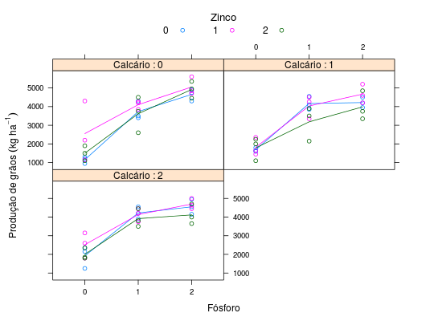

Dados de um experimento fatorial \(3^3\), com confundimento parcial de 2 graus de liberdade da interação dupla. O estudo é sobre a absorção e translocação de zinco em arroz de terras altas sob a influência de fósforo e calcário num delineamento de blocos ao acaso organizado em repetições. Utilizou-se o grupo Z de Yates para fazer o confundimento. Os dados são de produção de grãos, em kg ha\(^{-1}\).
Um data.frame com 81 observações e 6 variáveis, em que
reptblocozincofosfcalcprodZIMMERMANN (2004), Tabela 11.13, pág. 234.
library(lattice) data(ZimmermannTb11.13)#> Warning: data set ‘ZimmermannTb11.13’ not foundstr(ZimmermannTb11.13)#> 'data.frame': 81 obs. of 6 variables: #> $ rept : Factor w/ 3 levels "1","2","3": 1 2 3 1 2 3 1 2 3 1 ... #> $ bloco: Factor w/ 3 levels "1","2","3": 1 1 1 2 2 2 3 3 3 1 ... #> $ zinco: num 0 0 0 0 0 0 0 0 0 0 ... #> $ fosf : num 0 0 0 0 0 0 0 0 0 1 ... #> $ calc : num 0 0 0 1 1 1 2 2 2 2 ... #> $ prod : num 1200 950 1300 1600 1650 1800 1250 2150 2350 3900 ...ftable(xtabs(~fosf + calc + zinco, data = ZimmermannTb11.13))#> zinco 0 1 2 #> fosf calc #> 0 0 3 3 3 #> 1 3 3 3 #> 2 3 3 3 #> 1 0 3 3 3 #> 1 3 3 3 #> 2 3 3 3 #> 2 0 3 3 3 #> 1 3 3 3 #> 2 3 3 3ftable(xtabs(~fosf + calc + zinco + interaction(bloco, rept), data = ZimmermannTb11.13))#> interaction(bloco, rept) 1.1 2.1 3.1 1.2 2.2 3.2 1.3 2.3 3.3 #> fosf calc zinco #> 0 0 0 1 0 0 1 0 0 1 0 0 #> 1 0 1 0 0 1 0 0 1 0 #> 2 0 0 1 0 0 1 0 0 1 #> 1 0 0 1 0 0 1 0 0 1 0 #> 1 0 0 1 0 0 1 0 0 1 #> 2 1 0 0 1 0 0 1 0 0 #> 2 0 0 0 1 0 0 1 0 0 1 #> 1 1 0 0 1 0 0 1 0 0 #> 2 0 1 0 0 1 0 0 1 0 #> 1 0 0 0 1 0 0 1 0 0 1 0 #> 1 0 0 1 0 0 1 0 0 1 #> 2 1 0 0 1 0 0 1 0 0 #> 1 0 0 0 1 0 0 1 0 0 1 #> 1 1 0 0 1 0 0 1 0 0 #> 2 0 1 0 0 1 0 0 1 0 #> 2 0 1 0 0 1 0 0 1 0 0 #> 1 0 1 0 0 1 0 0 1 0 #> 2 0 0 1 0 0 1 0 0 1 #> 2 0 0 0 0 1 0 0 1 0 0 1 #> 1 1 0 0 1 0 0 1 0 0 #> 2 0 1 0 0 1 0 0 1 0 #> 1 0 1 0 0 1 0 0 1 0 0 #> 1 0 1 0 0 1 0 0 1 0 #> 2 0 0 1 0 0 1 0 0 1 #> 2 0 0 1 0 0 1 0 0 1 0 #> 1 0 0 1 0 0 1 0 0 1 #> 2 1 0 0 1 0 0 1 0 0xyplot(prod ~ factor(fosf) | factor(calc), data = ZimmermannTb11.13, as.table = TRUE, groups = zinco, type = c("p", "a"), xlab = "Fósforo", ylab = expression("Produção de grãos"~(kg~ha^{-1})), auto.key = list(title = "Zinco", cex.title = 1.1, columns = 3), strip = strip.custom(strip.names = TRUE, var.name = "Calcário"))